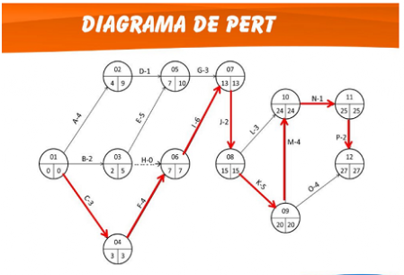
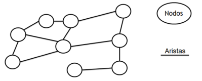
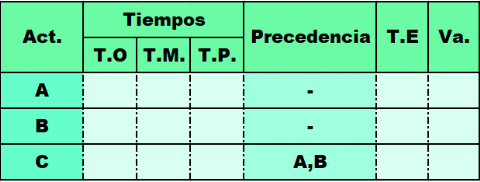

Herramienta PERT por Claudia Sandoval
La presente pagina web es el resultado de las practicas de la materia Metodologia de la Investigacion
de la Universidad Catolica Boliviana "San Pablo" de Cochabamba - Bolivia.
Presentacion de Proyecto >

¿Qué es el metodo PERT?
El metodo PERT, abreviatura de técnica de revisión y evaluación de programas en inglés (Program Evaluation and Review Techniques), es una herramienta de gestión de proyectos que ha sido fundamental en la planificación y coordinación de tareas dentro de proyectos complejos desde su desarrollo por la Marina de EE.UU para la planificacion del proyecto Polaris. En la década de 1950.
El metodo PERT se rige como una herramienta fundamental para la gestión eficiente de proyectos, permitiendo la planificación y control de actividades de manera sistemática.
&n Presentacion de Proyecto > bsp; Presentacion de Proyecto >
El diagrama de PERT esta formado por nodos los circulo y aristas las flechas, que estan conectados entre si, formando una red. Las flechas representan las tareas eventos o hitos, trazan la secuencia de estas y sus correspondientes estimaciones de tiempo, mientras los nodos representan las acciones de las tareas.
Esta estructura no solo ayuda a identificar la ruta crítica, la secuencia de tareas que determina la duración del proyecto, sino también en optimizar la gestión del tiempo y la asignación de recursos.
Componentes importantes de un diagrama de PERT
- Tiempo optimista (TO): Es la menor cantidad posible de tiempo necesaria para completar una tarea.
- Tiempo más probable (TM): Es el tiempo que llevará completar una tarea sin demoras.
- Tiempo pesimista (TP): la cantidad máxima de tiempo necesaria para completar una tarea.
- Tiempo esperado (TE): Es el tiempo necesario para completar una tarea, si se toman en cuenta las posibles demoras.
- Precedencia: Indica el orden en el cual las actividades deben realizarse para completar con éxito un proyecto.
- Varianza: Proporciona una medida de cuán probable es que la duración real de una actividad difiera de la estimación inicial.
A continuacion estan los pasos para calcular el metodo PERT.



PASOS PARA CALCULAR CON EL METODO PERT
1ro. Como calcular el tiempo esperado
2do. Como construir la red
3ro. Como encontrar la ruta critica
4to. Como calcular la varianza y probabilidad
El tiempo esperado (T.E.) se calcula con la siguiente formula:
TE = (TO+(4*TM)+TP)/6
El TE nos ayudara a construir la red.
Comenzando desde el inicio que tiene valor 0.
Despues de haber sumado los tiempos de cada posible camino del proyecto.
Se escoge el camino con mayor suma de tiempo, las actividades de ese camino son el camino critico (C.C.) de proyecto
Se escoge el camino con mayor suma de tiempo, las actividades de ese camino son el camino critico (C.C.) de proyecto
Despues de haber haber encontrado la ruta critica, se procede a calcular la varianza de las actividades que pertenecen a la ruta critica. Con la siguiente formula:
Va= ((TP - TO) /6) ^2
Esos serian los pasos basicos del metodo PERT.